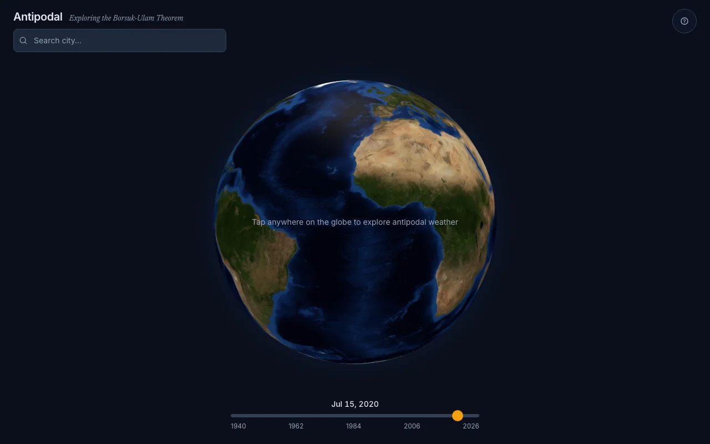
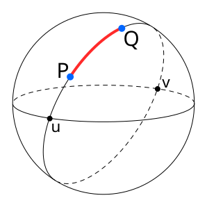
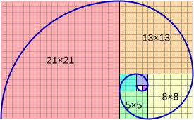

The Borsuk-Ulam theorem says that for any continuous function from the surface of a sphere to the plane, there exists a pair of antipodal points where the function takes the same value. For \(f: S^2 \to \mathbb{R}^2\), there is always some point \(\mathbf{x}\) on the sphere such that \(f(\mathbf{x}) = f(-\mathbf{x})\). Applied to Earth with temperature and pressure as the two real-valued functions, this means there must always be a pair of diametrically opposite points on the planet with identical temperature and identical pressure, simultaneously. This project lets you explore that phenomenon with real data.

{kind=link}
Antipodal geometry
The antipodal point of a position at latitude \(\varphi\) and longitude \(\lambda\) is straightforward: negate the latitude and shift the longitude by 180 degrees.
\[\varphi' = -\varphi, \qquad \lambda' = \begin{cases} \lambda + 180° & \text{if } \lambda + 180° \leq 180° \\ \lambda - 180° & \text{otherwise} \end{cases}\]Most of the Earth's land mass has ocean at its antipode. Australia sits opposite the Atlantic, most of South America is opposite Southeast Asia, and nearly all of North America is antipodal to the Indian Ocean. There are only a handful of land-to-land antipodal pairs: parts of Spain and New Zealand, Argentina and China, the Philippines and Brazil. This matters because weather stations are sparse over oceans, so observing the Borsuk-Ulam guarantee directly from station data is hard. You need a gridded reanalysis product.
Fibonacci sphere sampling
Distributing points uniformly on a sphere is a harder problem than it sounds. A naive latitude-longitude grid clusters points at the poles and spaces them out at the equator. The Fibonacci sphere solves this by placing \(n\) points using the golden angle \(\phi = \pi(3 - \sqrt{5})\), the irrational-number analog of the golden ratio applied to angular spacing.

{kind=link}
For the \(i\)-th point out of \(n\), compute the vertical position as a linear interpolation from pole to pole, then wrap the azimuthal angle by the golden angle:
\[y_i = 1 - \frac{2i}{n - 1}, \qquad r_i = \sqrt{1 - y_i^2}, \qquad \theta_i = \phi \cdot i\]The latitude and longitude follow from converting these Cartesian-on-the-unit-sphere coordinates:
\[\text{lat}_i = \frac{180}{\pi} \arcsin(y_i), \qquad \text{lng}_i = \frac{180}{\pi}\,\theta_i \pmod{360}\]The key property is that no two consecutive points share similar longitude, so the spiral never bunches up. With \(n = 500\) points the grid covers Earth at roughly 250 km resolution, dense enough to interpolate weather at any query location while keeping the dataset small enough to precompute and store cheaply.
Haversine distance
Querying weather at an arbitrary point requires finding the nearest grid points, which means computing great-circle distances. The haversine formula gives the shortest path between two points on a sphere of radius \(R\):
\[a = \sin^2\!\left(\frac{\Delta\varphi}{2}\right) + \cos\varphi_1 \cos\varphi_2 \sin^2\!\left(\frac{\Delta\lambda}{2}\right)\] \[d = 2R \arctan\!\left(\frac{\sqrt{a}}{\sqrt{1 - a}}\right)\]with \(R = 6{,}371\) km for Earth. The haversine is numerically stable for small distances (unlike the spherical law of cosines) and avoids the computational cost of Vincenty's formulae for ellipsoidal geodesy. For weather interpolation at hundred-kilometer scales, the spherical approximation is more than adequate.
Inverse distance weighting
Given the \(k = 3\) nearest grid points and their recorded values, the weather at the query point is estimated by inverse distance weighting (IDW). Each neighbor contributes in proportion to the inverse of its distance raised to a power \(p\):
\[w_i = \frac{1}{d_i^p}, \qquad \hat{v} = \frac{\sum_{i=1}^k w_i \, v_i}{\sum_{i=1}^k w_i}\]With \(p = 2\) (the default), nearer points dominate sharply. If a query point falls exactly on a grid node (\(d_i = 0\)), the interpolation short-circuits and returns that node's value directly, avoiding division by zero. IDW is a reasonable choice here because the underlying fields (temperature, pressure) are smooth at the spatial scales involved. It won't capture sharp frontal boundaries, but it gives plausible values everywhere on the globe without requiring a full geostatistical model.
The scanner
The scanner mode searches all 500 grid points on a given date to find the location where the Borsuk-Ulam guarantee comes closest to being realized: the pair of antipodal points with the smallest combined difference in temperature and pressure. The scoring function normalizes both variables so neither dominates:
\[\text{score}_i = \frac{|\Delta T_i| - \min|\Delta T|}{\max|\Delta T| - \min|\Delta T|} + \frac{|\Delta P_i| - \min|\Delta P|}{\max|\Delta P| - \min|\Delta P|}\]where \(\Delta T_i = T_i - T_i'\) and \(\Delta P_i = P_i - P_i'\) are the temperature and pressure differences between each grid point and its antipode. The grid point with the lowest score is the closest empirical approximation to the guaranteed zero of the Borsuk-Ulam mapping for that day. In practice, you can usually find pairs with temperature differences under 1 degree C and pressure differences under 2 hPa, even though the overall ranges span tens of degrees and tens of hectopascals.
Data pipeline
The weather data comes from ERA5, ECMWF's fifth-generation reanalysis product, accessed through the Open-Meteo archive API. For each of the 500 grid points and their 500 antipodal counterparts, the pipeline fetches daily mean 2-meter temperature and mean sea-level pressure. The date range spans 1940 through 2024, broken into 5-year chunks to stay within API rate limits (10 locations per batch, 6-second delays between requests, a budget of 5,000 total requests per run).
The raw data is transformed into monthly files and stored in Cloudflare R2, served by a Cloudflare Worker that handles the interpolation and scanning queries. The grid coordinates are precomputed and stored alongside the data, so the API only needs to do a nearest-neighbor lookup and IDW interpolation per request, not regenerate the Fibonacci sphere.
The front end
The UI is built with React 19 and react-globe.gl, which renders a WebGL globe via Three.js. State management uses Zustand. You click a point on the globe, the app computes its antipode, queries both locations' weather for the selected date, and draws arcs connecting the pair. The scanner mode renders all 500 grid points as colored markers, with the Borsuk-Ulam-closest pair highlighted.